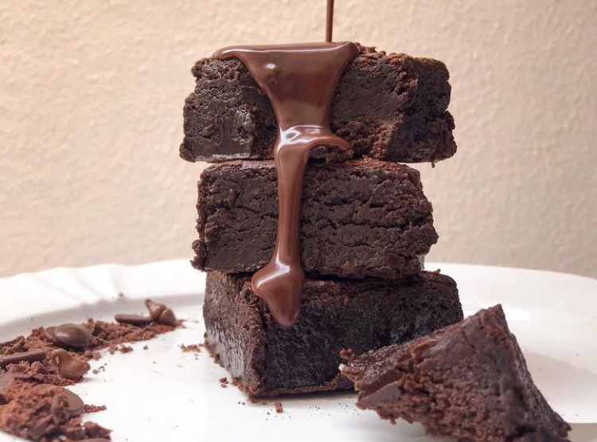

Brownie
O brownie é uma sobremesa tipicamente americana. Essa receita é a definitiva aqui em casa e está marcada com cinco estrelinhas no meu caderno de receitas escrito a mão.

Nossos bolos e doces são feitos artesanalmente para agradar olhos e paladares
O brownie é uma sobremesa tipicamente americana. Essa receita é a definitiva aqui em casa e está marcada com cinco estrelinhas no meu caderno de receitas escrito a mão.

Os cookies são uma sobremesa deliciosa não há dúvida. A massa fica deliciosa e as gotas de chocolate dão um sabor muito especial.

Bolo é carinho em forma de comida. Cheiro de bolo saindo do forno é melhor que qualquer perfume.
Oiee, meu nome é Julya Botelho e tenho 16 anos. Comecei no Instagram oficialmente em março de 2022. Desde criança, mesmo que não soubesse o que significava empreender, me interessava por esse caminho. Vendia doces, desenhos de colorir e meus brinquedos com apenas 6 anos de idade. Ao longo dos anos, entendi que empreender era o estilo de vida que eu queria.
Compre pelo WhatsApp